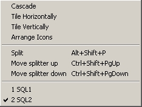

|
Window Menu
|
Previous Top Next |
|

|
Cascade : Put all the opened windows in cascade mode.
Tile Horizontally : Put all the opened windows in
horizontal mode.
Tile Vertically : Put all the opened windows in
vertical mode.
Arrange Icons : Reorganize all reduced windows icons.
Split : Move the top of results Window to the chosen
position.
Move Splitter Up : Move the top of results Window up.
Move Splitter Down : Move the top of results Window
down.
Windows Viewer : Show all opened windows name.
|